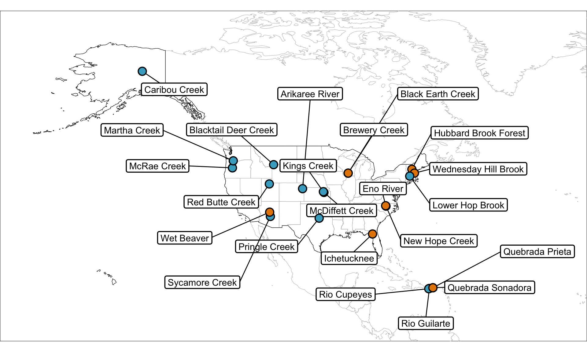
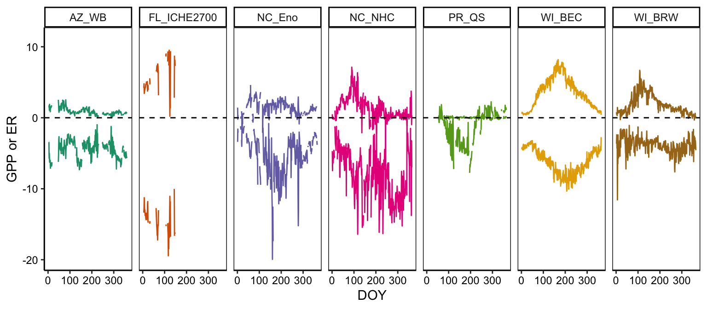
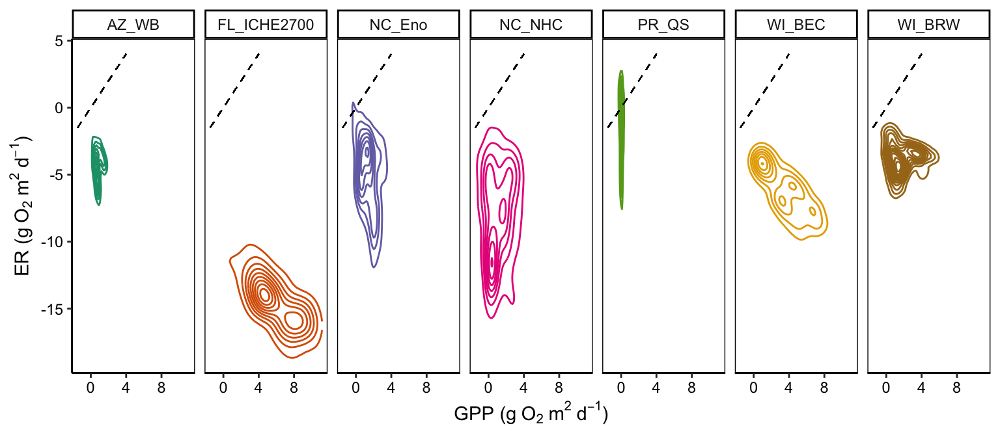
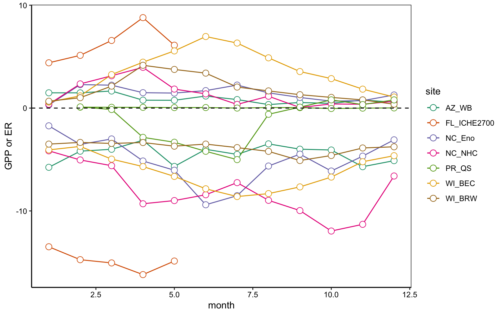
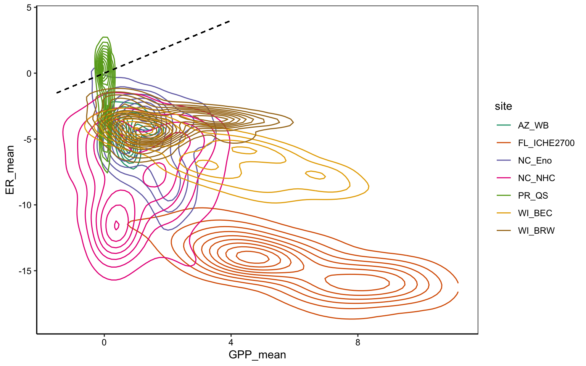

Figure 1. Map of StreamPULSE (n = 12) and NEON (n = 13) study sites used in this analysis. Blue = StreamPULSE site, orange = NEON site. (would be neat to have a way to show years of metabolism record for each site on this map)

Figure 2. Average daily GPP and ER at each site for period of record. DOY = day of year. (Would be neat to have a grey line for each year of data, instead of one line for the mean as is currently, and display trend with a local regression line)

Figure 3. “Fingerprint” of the distribution of daily mean GPP against daily mean ER at each site. Dashed line represents 1:1 GPP:ER relationship.

Figure 4. Mean monthly GPP and ER at each site for the period of record. Month represented by an integer value, where 1 = January. (This is super messy but a figure like this may be advantageous for comparing trends between the 25 sites. Could also consider coloring lines by denitrification or fixation rate, as a first try to visualize relationships)

Figure 5. “Fingerprint” of the distribution of daily mean GPP against daily mean ER at each site. Dashed line represents 1:1 GPP:ER relationship.
This is a place to recognize people and institutions. It may also be a good place to acknowledge and cite software that makes your work possible.